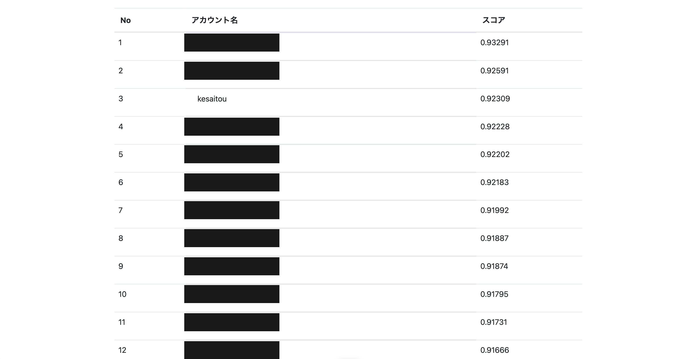

Backend / API
データを取得・加工し、API として配信するサーバーサイドの実装。
Portfolio / 2026
2025年にプログラミングを始め、現在は 42Tokyo で C / C++ を中心に学んでいます。サーバーサイド開発、データ分析・機械学習、低レイヤの課題に取り組んできました。
Skills
現在扱っている技術・学習している領域です。
データを取得・加工し、API として配信するサーバーサイドの実装。
構造化データの予測、評価設計、再現可能な実験環境の構築。
bash 相当のシェルや C 標準ライブラリ関数を自作しながら、プロセス・パイプ・スレッド・排他制御などを C で学習。
OOP を中心に、大規模開発でも保守性・再利用性を高められる設計・実装の進め方を学習。
社内ナレッジを参照する RAG と、調査・実行・評価を進める AI エージェントの設計・開発。
Selected work
公開可能な範囲で、担当内容と使った技術を記載しています。
デジタルグリッド株式会社のサーバーサイド開発インターンとして、電力取引プラットフォーム向けの気象データ API を実装しました。データ形式の解析とパーサーの改良を一人で担当し、気象庁の GRIB2 仕様書と実際のバイナリファイルを読み解きながら、データがどの順序と形式で格納されているかを確認しました。
その過程で、公開ライブラリのパーサーでは扱えない気象庁独自の仕様が含まれることを発見しました。仕様書とライブラリ側の実装を照合し、不一致の箇所を特定したうえで、独自仕様を読めるようにパーサーを改良。取得した気象データを API として配信するところまで実装しました。
未知の気象データ形式に対しても、42Tokyo の minishell で培った「仕様書を読み、実装と照らし合わせる」進め方を応用しました。ドメイン知識がない状態から、仕様理解・原因特定・実装まで一貫して進めた経験です。

コンペでスコアを上げるには、特徴量・モデル・パラメータを変えた実験を大量に試す必要があります。この試行錯誤のループ自体を AI に回させれば、人間一人では届かない探索量を稼げると考えました。ただし AI に自走させるには「スコアが本当に改善したか」を機械的に判定できる土台が要るため、まず評価ハーネスを構築しました。特徴量、モデル、Optuna で得たパラメータ、検証方法は YAML で管理し、同じ設定からいつでも実験を再現できるようにしました。
GITHUB: KESAITO09/ML-EXPERIMENT-HARNESS ↗評価ハーネスで最も気を使ったのは、CV スコアを鵜呑みにしないことです。まずデータの構造を丁寧に理解し、その CV スコアが本当に信頼できるかを慎重に検討しました。データには重複が含まれ、素朴な交差検証ではリークで見かけのスコアが上振れするとわかったため、同一グループが学習用と検証用にまたがらない group-CV を採用し、汎化性能を正しく測れるようにしました。
ドメインを踏まえた仮説づくりは人間が担当しました。一方で、Kaggle の上位者の手法、類似コンペのアプローチ、最新論文などLLMの学習時点にない外部情報は、複数の AI エージェントに並列で Deep Research させました。
得られた知見を入力として、AI が特徴量・モデル・パラメータを提案し、実験・評価・記録までを閉ループで実行します。提案 → 実行 → 評価 → 次の提案を自律的に回し、人間はドメイン仮説の起点と最終判断に集中できる仕組みにしました。
だからこそ採否は、公開リーダーボードの順位ではなくこの group-CV のスコアで判断しました。一時的に高く見える手法を除外しながら、着実に改善を積み上げました。
この PoC では、社員データから離職リスクを予測するモデルを構築しました。ただし既存の離職予測サービスのように「離職リスクの高さ」を出すだけでは、面談で何を確かめるべきかまでは分かりません。そこでモデルの予測に加えて、予測を押し上げた主な要因を順位付きで示す面談カードまで作成しました。
面談カードには、働き方・業務量・上司やチームとの関係を先に確認するか、役割期待・成長機会・評価・報酬への納得感を先に確認するかを記載します。モデルの結果を離職理由の断定には使わず、本人との対話で確かめるべき論点を絞るための補助情報として扱います。
さらに、社員ごとの「離職しやすさ」と採用・育成コストを掛け合わせ、面談の優先順位も決定します。限られた面談枠を適切に配分することで、試算で約8,000万円の損失削減余地がある対象へ優先的にフォローを集中する PoC です。
History
42Tokyo での学習と、開発・データ分析の活動。
Links
公開しているコードと学習記録。